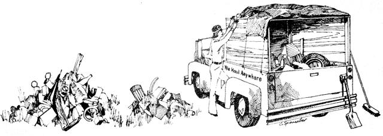

Two years ago i bought a used half-ton Chevrolet pickup truck and started operating my own hauling business out of the city apartment in which I lived. The enterprise was successful right from the start and has solved the money hassles for my lady, Christina, and me ever since.
Our good fortune is no fluke either, because Russell Danel-a friend of mine-and two of my brothers have nova followed my example and established prosperous hauling operations of their own. Russell quit an office job to become my partner three weeks after I launched my enterprise and he now has his own truck and his own business. My brothers are also quite successful, If you're trying to get off the nine-to-five treadmill and blossom into your-real self, then, read on. Our trade "secrets" are all here and should work as well for you as they have for us.
If you don't already have a truck you'll have to mount a search. Check the newspapers, your friends . . . or walk the streets. There are a surprisingly large number of old pickups, vans and flatbeds, around-still in really fine shape-for $300 or less. (For help in selecting and evaluating a secondhand truck see the 10-page feature in MOTHER NO. 12--Ed.) One special tip: extended side mirrors are a must no matter what truck design you buy because a full load on any model will cut off your vision to the rear on both sides.
When you're shopping for a vehicle, bear in mind that the business we're discussing is a real "growth industry". People everywhere have discards, garden trimmings and piles of trash that they're thrilling to pay to have hauled away. If you provide a reasonable service at a fair price, you're almost sure to find yourself in steadily increasing demand . . . so outfit yourself accordingly. I started with a half-ton pickup and, within months, was forced to "expand" by purchasing a 20-year-old three-quarter ton International flatbed for $125. Think big.
"Ganesh", my stalwart "new" truck was a good investment. It has three times the carrying capacity of the pickup and decreases-by the same factor-the number of trips I must make to the dump. To put it another way, I can handle more calls (and make more money) in a given day with the bigger vehicle.
Whichever you buy, pickup or flatbed, your first concern wilt be the construction of a generously proportioned carryall box. The cane I built for Ganesh is six feet wide, five feet high and nine feet long. It's perfectly all right to recycle old 2 x 4's and plywood from the dump for this but do make sure that each side of the box is solid so that all parts of every load you haul stay with you. Remember, you want to be an Ecological Hygiene Transporter . . . not a common litter rat.
And don't forget a cover for your load! I once was stopped and fined $24 because mine was inadequate. Now I make darn sure, with any particular cargo, that the heavy items go on last to help weigh any loose and fight objects down, I even use the very heaviest odds and ends to secure a selection of old sleeping bags with which I completely cover each load.
Check your state's laws about running-light requirements and make sure you have a red flag to tie on the end of any load that extends past the rear of the vehicle. Tune the truck, change its oil and rake any necessary mirror repairs. (I replaced Ganesh's battery and starter motor with rebuilt parts. He's run beautifully for well over a year now and I just feed him gas and an occasional quart of oil.) Install those mirrors I mentioned if your machine doesn't already have them, throw an old broom in the back, get a city map (you'll need it for work tomorrow), call the local newspaper and place your ad.
Bear in mind that your newspaper advertisement will determine people's first impression of you. Make it short and to the point. If you're a veteran it definitely will be to your advantage to mention the fact. My ad reads:
Young veteran will haul or?
Reasonable. Anytime. 432-7690.
In winter I add "any weather" and my phone stays hot. The first day my ad appeared in the local papers three people responded and I promptly got three hauling jobs, for which I charged $14 apiece. Forty-two dollars my first day out . . . I'd just found my alternative!
The question marks hooks me an assortment of odd jobs which is especially nice around Christmas when money gets tight and hauling becomes lean. I've set up Christmas trees, built fences and clotheslines and once jimmied open a second-story window for a woman who had locked herself out of her apartment.
Kevin and Terry, the two brothers I mentioned earlier, are both, in school and get good response by using the Word "student" in their ads. They've also invented a system" of perusing the "Vital Statistics" section of the newspapers to learn who's been issued a building permit . . . and then promptly mailing business cards to the addresses. The idea has netted bo th of them steady work with private contractors.
When your phone jangles, you should grab a pencil and paper and take down the address and telephone number of the potential customer. Try not to give any estimates over the phone as you really heave to judge each hauling job by sight to be fair to both the other party and yourself. Drive out, take a look at the work to be done and give a free estimate. Eight times out of ten I get the job at my price and I usually score the rest by haggling a little with the customer. I average $14 to $20 a load.
Although I can put a lot off swag in Ganesh's box I seldom haul dirt or cement. Such extra-heavy material cause too much strain on his old shocks and I have to make too many trips to dump it. By the way, if you do decide to haul dirt or cement, don't select an, empty lot in which to offload such aggregate. Tlhe health department or the lard's owner might not appreciate the idea.
Affluence (my definition) is contempt for old, but still usable items . . . and anything can turn up in the refuse you handle. I once found a beautiful antique wooden trunk with leather straps, brass reinforcing and still-visible manufacturer's sticker and trade mark that dated the chest from 1894. My lady and I have equipped our kitchen from the treasure hunts we've conducted through other people's discarded memories . . . our floors have been snugly carpeted the same way and I even have an old stuffed sea turtle that one of my customers threw, out!
We also sort out and save good, substantial throwaways for which we have no immediate personal use. Such items are salable at local auctions, flea markets and swap meets. Reusable stoves, refrigerators and furniture are given to the Salvation Army, we recycle anything recycle-able and sell cardboard, newsprint and scrap metal to local salvage yards. Soda bottles, or course, can be redeemed at grocery stores and some beer distributors will now pay you for both their aluminum cans and glass bottles. This may seem like an infinitesimal ecological effort on our cart but if everyone did just this much to recycle and reuse the "junk" right around then, our environment would certainly be much more pleasant . . . and the earth's resources would go a great deal further.
You'll want to rent a hand truck when you move washers, dryers and other large, heavy items. You'll also need to hire help and help means expense . . . but, then again, it's nice to be able to offer jobs to a deserving friend or friends from time to time.
Your only other expenses will be for gasoline, oil and repairs to your truck (I perform my own labor to save money), the phone bill (Ma Bell is harsh, but students don't have to pay a deposit in this area) and a nominal amount for advertising. If you use a privately owned dump, as gyre do, you'll have to cough up fees for the privilege. Don't let this talk of cash flow out discourage you though . . . you'll make plenty to cover the expenses.
I rather like the freedom and independence my hauling business has given me. It's shown me that life in tire city doesn't really have to be so tenacious. It's also been our bridge to other things.
Right now I've stopped working for a while to attend school on the GI Bill while Christina and I live in a beautiful canyon in the Sierras underneath unfiltered sunlight and surrounded by nature. Our hone is a tips made from the plans in MOTHER NO. 1.
I still haul . . . but only an occasional cord of wood. When money is necessary, I always have the means of' earning it . . . Ganesh and I just pick up the dollars that are lying around in people's back yards.
|
 |
|
|